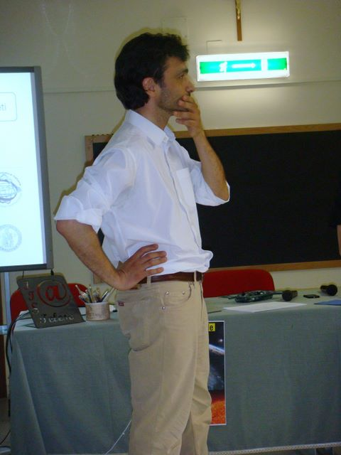

I am an astrophysicist,
Associate Professor at the Physics Department of the
University of Naples Federico II.
I am interested in the study of the nature and distribution of dark matter,
of the evolution of cosmic structures,
and the evolution of the scientific thought.
My main research area is the study of the properties of dark matter and gravitational lensing.